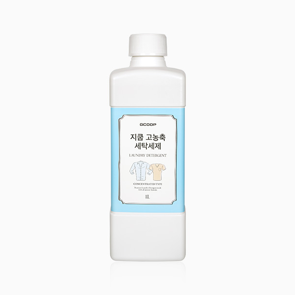

지쿱 고농축 세탁세제
온 가족 피부를 지키는 식물 유래 프리미엄 고농축 세탁세제
- 회원가입 없이 회원가
- 지쿱 본사 정품 직접 발송
- 5만 원 이상 무료배송
지쿱 고농축 세탁세제 상세 설명 · 원료와 특징
식물유래 포뮬러로 만든 프리미엄 고농축 세탁세제 식물 유래 포뮬러의 사용은 자연을 생각하는 것뿐만 아니라 우리 가족의 건강을 지키는 것 제품 특징 식물 유래 포뮬러로 만든 프리미엄 고농축 세탁세제 용량: 1000mL 식물성 계면활성제 사용 - 쉽게 생분해 되어 환경을 보호해 줍니다.
식물유래 포뮬러 기분 좋은 사용감 (NATURAL) - 드럼스틱씨추출물, 동백나무꽃추출물, 참나리추출물, 꿀추출물 함유 무첨가(FREE) - 無방부제(14종), 無중금속, 無알러지유발물질(26종), 無프탈레이트(6종), 無형광증백제, 無인산염, 無디옥산, 無벤젠, 無테트라클로로에틸렌, 無글루타알데하이드, 無석유계계면활성제, 無인공향, 無동물성원료, 無색소 안전한 성분(SAFETY) - 민감한 유아부터 온 가족 사용을 위한 피부자극 테스트 완료. 독일 더마 테스트 / 국내 피부자극 테스트 완료 (사용 조건 인체 피부자극 시험결과 무자극)
주요 성분 드럼스틱씨추출물 모링가씨추출물이라고도 하며 드럼스틱의 씨앗에서 추출함.
피부 컨디셔닝 효과로 피부를 부드럽게 해 줌.
동백나무꽃추출물 동백나무 꽃에서 추출하며 피부에 컨디셔닝을 부여하고 부드럽게 해 줌.
참나리추출물 백합에서 추출하여 얻은 성분.
피부 컨디셔닝 역할로 생기있는 피부에 도움을 줌.
꿀추출물 강한 보습 작용으로 건조감을 예방.
피부 활력을 주는 컨디셔닝 작용으로 생기 있는 피부에 도움을 줌.
콘민트오일 산뜻한 향을 부여해 줌 꼭!
여야 합니다.
환경을 생각하는 세제를 사용하는 것은 자연 뿐만 아니라 우리 가족의 건강을 지키는 것 1종 세제 자연과 세탁, 피부 보호를 동시에!
식물성 계면활성제 사용으로 화학성분을 멀리하였으며, 고농축 세탁세제로 일반 세제보다 세탁력이 더 좋습니다.
브랜드 스토리 일상생활에 효율적이고 편리한 제품을 공급하며 착한 소비를 지향하는 생활 전문 브랜드입니다.
매일 사용하는 일상 제품은 언제 어디서든 믿고 안심할 수 있어야 합니다. 라이프스타일에 맞는 편리한 제품을 만나보세요.
사용 방법 일반 세탁기 일반 (10kg 기준) 물의 양 표준사용량 빨래량 드럼 세탁기 드럼 *손 빨래 물 5L에 1.65mL | 본 제품 뚜껑의 용량은 20mL 입니다. | 표준 사용량을 지켜주세요.
각종 인증 사항 비코프인증 획득!
비코프인증(B-Corp Certified) 이란?
B-Corp은 비즈니스를 통해 사회 환경적 문제를 해결하고 사회에 긍정적인 영향을 끼치는 기업을 확대하기 위해서 2007년 BLab (미국비영리 조직)이 만든 글로벌 사회적 기업 인증 제도입니다.
가족친화우수기업 인증 획득!
가족친화인증 가족친화제도를 모범적으로 운영하는 기업 및 공공기관에 대하여 심사를 통해 인증을 부여하는 제도입니다. 가족친화인증 기업은 근로자가 일에 집중하도록 하여 기업 생산성과 경쟁력 강화하고 출산율 제고, 고용 안정 등으로 국가경제 발전에 기여할 뿐 아니라 가족친화경영 확산을 통한 근로자와 가족 구성원의 삶의 질을 향상시키는 바른 기업 문화를 확산 시킵니다.
독일 피부과학연구소 더마테스트(dermatest) 엑셀런트 획득!
세계 최고 독일 피부과학연구소 더마테스트(dermatest)에 24시간, 48시간, 72시간 인체 피부 적용 실험을 의뢰 “피부자극없음”인 Excellent를 획득하였습니다.
지쿱 본사 제품 상세페이지 내용을 옮겨 정리했어요.
상품정보제공고시
| 품명 및 모델명 | 지쿱 고농축 세탁 세제 |
|---|---|
| 용량 또는 중량 | 1L |
| 법에 의한 인증ㆍ허가 등을 받았음을 확인할 수 있는 경우 그에 대한 사항 | 안전확인대상생활화학제품 표시사항 신고번호: 제 FB21-03-0885호 |
| 사용방법 | 1. 일반세탁기 (10kg) 1) 빨래량 3kg이고 물의 양이 45L 일때 세제표준량은 15mL 사용 2) 빨래량 7kg이고 물의 양이 65L 일때 세제표준량은 21.7mL 사용 3) 빨래량 10kg이고 물의 양이 85L 일때 세제표준량은 28.4mL 사용 2. 드럼 세탁기 (10kg) 1) 빨래량 3kg일때 세제표준량은 10mL 사용 2) 빨래량 7kg일때 세제표준량은 17mL 사용 3) 빨래량 10kg일때 세제표준량은 22mL 사용 * 손 빨래 물 5L에 1.65mL * 본 제품 뚜껑의 용량은 20mL 입니다. * 표준 사용량을 지켜주세요 |
| 주요물질/ 보존제/ 계면활성제 | 주요물질 : 정제수, 알코올, C12-14, 에톡실레이트 보존제 : 3-(2-에틸헥실록시)프로판-1,2-디올 계면활성제 : 알코올, C12-14, 에톡실레이트(비이온계), 도데릴 D-글루코사이드(비이온계), 지방산, 코코넛 오일, 칼륨 염(음이온계) |
| 사용상 주의사항 | 1. 세탁 이외의 용도로 사용하지 마십시오. 2. 물세탁이 가능한 의류에만 사용하십시오. 3. 세제액이 바닥에 남아서 미끄러질 위험이 있으니 주의하십시오. 4. 드라이클리닝을 해야 하는 의복을 물세탁 할 경우, 손상 및 변형을 초래할 수 있습니다. 5. 손세탁을 할 경우 민감한 피부를 가지신 분은 가능하면 고무장갑을 이용하십시오. 6. 눈에 들어갔을 경우 흐르는 물에 씻은 후 의사의 지시를 받으시고, 또한 마셨을 경우 토하도록 한 후 의사의 지시를 받으십시오. |
| 보관 및 취급시 주의사항 | 1. 제품의 내용물을 분무기 등에 담아 분사하지 마시오. 2. 사용하기 전에 표시사항을 확인하십시오. 3. 표시된 사용방법, 표준사용량, 유통기한 등을 지켜 사용하십시오. 4. 내용물이 눈이나 피부에 접촉되지 않도록 하십시오. 5. 흡입하거나 마시지 마십시오. 6. 사람에게 직접 뿌리거나 분사되는 내용물을 흡입하지 마십시오. 7. 표시사항에 기재된 제품의 용도 외에는 사용하지 마십시오. 8. 변색, 탈색이 우려될 경우에는 먼저 눈에 띄지 않는 부위를 정해 소량으로 시험해 본 후 사용하십시오. 9. 직사광선이나 열기에 노출시키지 마십시오. 10. 넘어진 채로 두면 액이 흘러나올 수 있으니 방치하지 마십시오. 11. 제품을 사용한 후에는 내용물이 잔류하지 않도록 주변을 깨끗이 닦으십시오. 12. 직사 광선을 피해 서늘한 곳에 보관 하십시오. 13. 용기를 항상 밀봉하여 보관하십시오. |
| 제조일자 및 사용기한 | 제품에 별도 표기 |
| 판매원 | 제너럴바이오㈜ |
| 제조국 또는 원산지 | 대한민국 |
| 제조자, 수입품의 경우 수입자를 함께 표기 | 제너럴바이오㈜ |
| 품질 보증 기준(A/S 관련사항) | 본 상품의 품질보증 및 피해보상에 관한 사항은 관련 법률 및 공정거래위원회 고시 [소비자분쟁해결기준]에 따릅니다. |
| 소비자 상담 문의 | 카카오톡으로 문의 주시면 지쿱 본사로 접수해 드립니다. |
생활제품 다른 제품
배송·교환·반품
지쿱 본사에서 직접 발송해요. 50,000원 이상 주문 시 무료배송, 50,000원 미만은 배송비 2,500원이에요. A/S·교환·반품은 카카오톡으로 문의 주시면 지쿱 본사로 접수해 드려요.